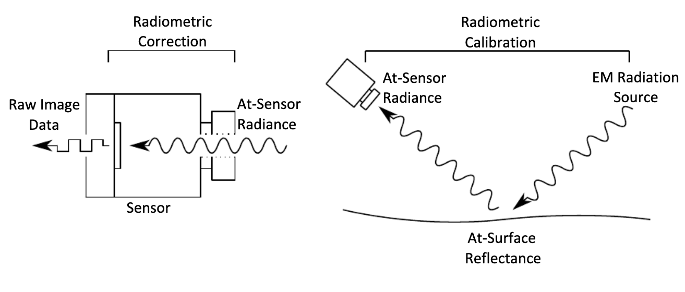
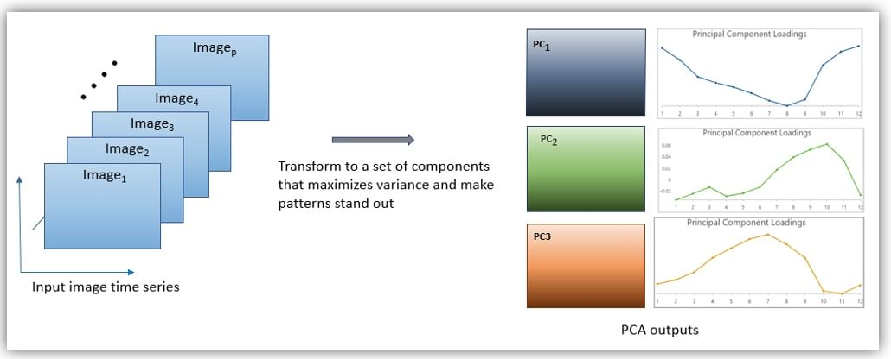

3 Remote Sensing Data
3.1 Summary
Overview
This week’s session explored the evolution of satellite imagery and the essential preprocessing steps that transform raw sensor data into reliable analytical tools. We revisited early innovations, such as the Multispectral Scanner (MSS) on Landsat missions, and examined how these developments paved the way for modern multispectral datasets. This foundational knowledge is critical for understanding the advanced processing techniques applied in contemporary remote sensing.
3.1.1 Corrections
Before raw satellite images can be effectively utilised, several corrections are imperative to mitigate inherent distortions:
- Geometric Correction: Aligns images using ground control points to rectify perspective distortions caused by off‐nadir imaging.
- Orthorectification / Topographic Correction: Adjusts images so that pixels appear as if viewed from directly overhead, compensating for the effects of terrain variations using elevation data.
- Atmospheric Correction: Removes undesired effects due to haze, scattering, and absorption, which otherwise might alter the true reflectance values.
These correction processes ensure that the imagery accurately represents the Earth’s surface for further analysis.
3.1.2 Radiometric Calibration
Following the corrections, radiometric calibration transforms raw digital numbers into physically meaningful values, such as radiance or reflectance. This conversion employs sensor-specific gain and bias factors derived from pre-launch calibration data. Although modern Level-2 products typically arrive pre-calibrated, understanding this process is essential, especially when addressing issues such as sensor drift or inter-sensor variability over multi-temporal datasets.

3.1.3 Enhancements and Data Joining
After calibration, additional enhancements refine the imagery for analytical purposes:
- Data Mosaicking and Joining: Techniques such as mosaicking or feathering are used to blend adjacent satellite tiles seamlessly, eliminating abrupt transitions at tile boundaries.
- Application of Filters: Convolution filters (both smoothing and sharpening) are applied to highlight specific features or to reduce noise, by computing local statistics like the mean or variance over a moving window.
- Dimensionality Reduction (PCA): Principal Component Analysis is utilised to reduce redundancy in multispectral data while preserving the most significant variations, thus facilitating more efficient subsequent analyses.

These enhancements collectively contribute to a more robust dataset, which is crucial for advancing remote sensing applications.
3.2 Applications
Preprocessing the data captured is essential in remote sensing, as it transforms raw satellite data into a reliable foundation for decision-making. In their study, Ban and Kim Ban & Kim (2024) demonstrate how aligning SAR and optical imagery using street intersections can significantly enhance flood modelling. Their method not only improves data integration across sensors but also boosts overall model accuracy, although its dependence on well-defined urban features might limit its applicability in less structured or rural environments.
In complex urban settings, addressing three-dimensional distortions is crucial. Rizeei and Pradhan (Rizeei & Pradhan, 2019) tackled this challenge by incorporating LiDAR-derived building heights into their orthorectification process, effectively reducing parallax errors. This approach yields highly accurate maps that are invaluable for urban planning tasks such as optimising solar panel placement, though it does raise questions about its adaptability in cities with diverse architectural styles or limited LiDAR data. This extra information of the building height could also be really helpful to understand the urban heat island effect as the height of the building could help also help undestand the shadowing effect.
Environmental monitoring also benefits from advanced preprocessing techniques. Lu et al. Lu et al. (2018) applied the FLAASH algorithm to Landsat imagery of Lake Taihu, successfully removing atmospheric scattering to facilitate precise detection of algal blooms. Furthermore, radiometric calibration—as demonstrated by Tong et al. Tong et al. (2010) —ensures data consistency over time, supporting long-term environmental monitoring and climate studies.
3.3 Reflection
This week’s session really opened my eyes to the behind-the-scenes processes involved in pre-processed satellite data, which I had previously taken for granted. It’s a fascinating blend of physics, mathematics, and coding—far more than just simple data preparation. Each correction (geometric, topographic, and atmospheric) is crucial, yet each introduces potential errors. This makes the entire process a delicate balancing act, where technical details and their limitations significantly shape what we can study with remote sensing. For example, accurate urban heat island studies rely on meticulously removing atmospheric effects; even minor haze correction errors could generate “phantom” hotspots, leading to incorrect conclusions and potentially flawed urban planning. This highlights how hidden preprocessing errors can skew research, emphasising the need for rigorous validation and uncertainty analysis in any remote sensing project.
The link between these preprocessing steps and broader data analysis techniques also intrigues me. Geometric and orthorectification corrections, for instance, are not merely cosmetic; they are essential for accurately overlaying diverse datasets, such as combining land cover maps with climate data. This integration is vital for projects like tracking deforestation or modelling urban growth, where analysing changes over time and across different data types is necessary. I am also curious and start wondering about the potential of deep learning, specifically convolutional neural networks (CNNs), to automate or improve these corrections. Could CNNs identify ground control points for geometric correction or enhance atmospheric correction by learning complex atmospheric patterns? The potential for deep learning to increase efficiency and accuracy, particularly given the vast volumes of current satellite data, seems possible. While I don’t foresee myself implementing all these steps, understanding the entire process behind this ready-made data is really interesting.